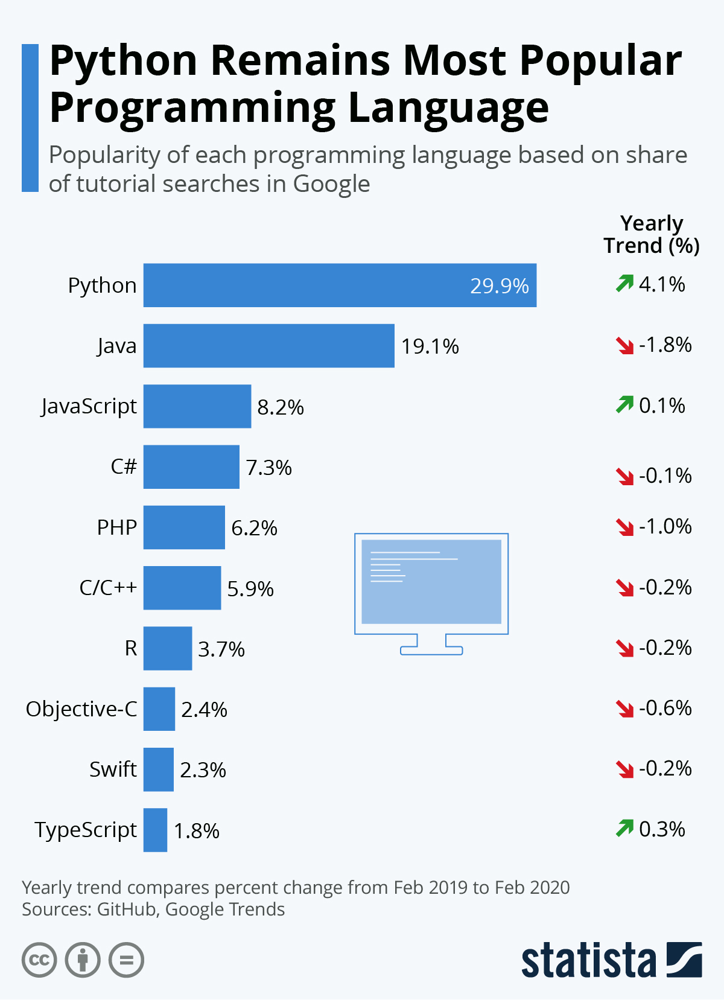
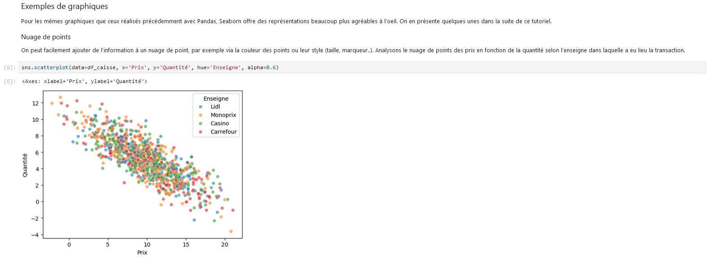

Introductory training to Python
Context
Purpose of the training
The SSPy training offers an introduction to the use of Python in statistical projects. It is particularly designed for agents of the public statistical service (SSP), with applications involving, as much as possible, data from French public statistics. Nevertheless, its materials are completely open-source (GitHub repository) and can therefore be reused in any Python training context.
Python in brief
Python, created by Dutch developer Guido van Rossum in 1991, is a high-level programming language known for its simple and readable syntax. The founding principles of the language are summarized in a manifesto called the “Zen of Python”. Python is a particularly versatile language, as it has a rich library of packages and brings together diverse communities, making it ideal for many application domains.
Why learn Python?
Despite being over 30 years old, Python remains an extremely dynamic language. More than that: not only is it already among the most popular languages, but it is also the one experiencing the fastest growth in terms of the number of users year after year.

One of the main reasons for this strong current growth is the rise of the data science field, within which Python has gradually established itself as the central language. Many key libraries in the field of data manipulation, data visualization, machine learning, and application deployment are available in Python. This growing adoption in various sectors makes it a preferred choice to unify practices through a common language, applicable to data science, development, as well as IT and statistical production.

Source: josephsalmon.eu
Python vs. R
Python and R are often compared because of their wide use in the statistical field. The fundamental difference is that Python is a general-purpose language, while R is specifically oriented towards statistics. However, in practice, they are more complementary than competitive, and the choice between the two often depends on the use case: for example, while the tidyverse ecosystem in R is unmatched for data manipulation, the ecosystem that has developed in Python around machine learning techniques (particularly the scikit-learn package) has no direct equivalent in the R world. Finally, the two languages are similar, and transitioning from one to the other is accessible without requiring a complete and costly relearning.
Training modalities
A “tutored e-training”
This training adopts a tutored e-training format. It takes place over an extended period (several months), with a focus on practical pedagogy. Tutoring is also available via a Tchap Channel, where participants can ask their questions continuously, as well as during periodic videoconference sessions.
Hosted on the SSP Cloud
The training is hosted on the SSP Cloud platform developed by Insee. This platform, dedicated to experimentation around data science and work on open data, offers an environment particularly suited to training with pre-configured environments having all the computing power necessary for common and innovative statistical processing.
Training program
The training program is divided into three main parts:
- Fundamentals of the
Pythonlanguage: basic types, data structures, conditional statements, functions, and an introduction to object-oriented programming inPython; - Data manipulation: file manipulation, working with
CSVandJSONfiles, numerical computation withNumPy, tabular data processing withPandas, and an introduction to data visualization inPython; - Application projects: building a Connect 4 game, weather predictions using data from APIs, and population census analysis.
Each chapter ends with a series of guided exercises that aim to directly apply the concepts studied in the chapter. The application projects are more exploratory and aim to apply the concepts studied throughout the training on realistic use cases.
Practically
Launching a chapter
The different chapters can be launched with a single click from the training space of the SSP Cloud. Launching a chapter means launching a jupyter-python service on the SSP Cloud, pre-configured for the training and which will open directly on the notebook associated with the chapter.

Jupyter notebooks
Principle
The training uses the interactive Jupyter notebook format, combining Markdown text, Python code, and HTML code for visualizations and animations. This format is particularly suitable for training and experimentation phases. Moreover, it allows for simple publication of both exercise notebooks and the associated course site.

Usage
The core of the notebook is the kernel, visible at the top right (Python 3 (ipykernel)) and which launches automatically when a notebook is opened. Practically, it is a Python interpreter running continuously in the background, allowing dynamic execution of Python code cells. Thus, objects created in one cell are persisted and can be called in another cell, enabling linear execution of the notebook like a script. When you want to clean the working environment of all objects created during the session, you can restart it (Kernel menu -> Restart Kernel).
The greyed-out cells are code cells. To execute the content of a cell, simply click on it and use the keyboard shortcuts Ctrl + Enter (executes the cell and remains on the active cell) or Shift + Enter (executes the cell and moves to the next cell). Note that executing a cell means executing all its content. If you want to execute line by line, you can create new cells (➕ button) and insert the different lines of code. Other code editors (like VSCode, available on the SSP Cloud) allow, like RStudio for example, to execute code line by line, but they are less suitable for discovering Python.
How to resolve errors?
Encountering errors is quite natural and expected when learning (and even after!) a programming language. Resolving these errors is really an opportunity to understand how the language works and to become autonomous in its practice. Here are some suggested steps to follow (in this order) to resolve an error:
- 1/ Carefully read the logs, i.e., the outputs returned by
Pythonin case of an error. Often, they are informative and can directly contain the answer. - 2/ Search the internet (preferably in English and on
Google). For example, giving the error name and an informative part of the error message returned byPythongenerally helps direct the results towards what you are looking for. - 3/ Often, the search will lead to the forum Stackoverflow, intended for this use. If you really can’t find the answer to your problem, you can post on
Stackoverflowdetailing the problem encountered so that forum users can reproduce it and find a solution. - 4/ Official documentation (of
Pythonand various packages) is often a bit dry, but generally exhaustive. It helps to understand how to use different objects properly. For example, for functions: what they expect as input, the parameters and their types, what they return as output, etc.
After the training?
Access to materials
All training materials remain accessible on the SSP Cloud after the training. The code that generates the materials is available on GitHub.
Using Python in statistical projects
To deepen your knowledge of the Python language after this introductory training, nothing beats practical application on concrete subjects! For the modalities of using Python in the context of statistical projects, it will depend on the organization:
- for open-data and inter-administrative projects, the
SSP Cloudis a good alternative sincePythonservices are already pre-configured there and a data storage service is offered (see documentation for more details); - for internal Insee projects, refer to the documentation on the use of
Pythoninternally; - for projects internal to other administrations, contact your IT department to find out the recommended usage modalities.
Continuing your training
The “natural” continuation of this training is the course on Python for data science given by Lino Galiana at ENSAE, also deployed in the training space of the SSP Cloud. The course picks up where this training leaves off and provides a very comprehensive overview of the different data science methods that can be employed in Python.
To deepen the more algorithmic approach to coding, the Advent of Code offers an exercise per day each December in the form of two-part puzzles, involving algorithmic solutions. It is an excellent opportunity to develop both algorithmic reflexes and Python knowledge. Note: while the first days remain accessible, the difficulty of the puzzles quickly becomes quite high.